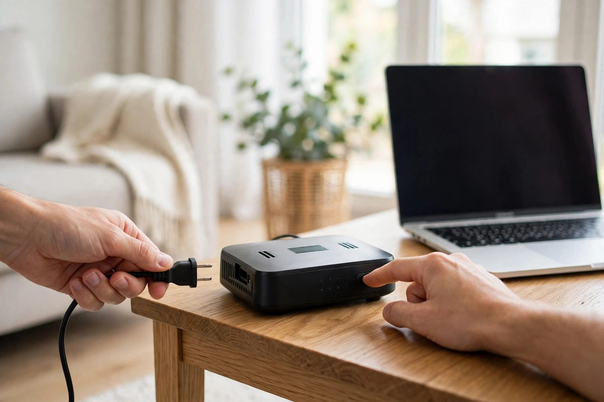

How to Fix Slow Internet

Slow internet is frustrating, but the fix is often simple and free. Before you pay for a faster plan or a new router, work through the steps below in order. Most slow connections are caused by a handful of common problems: a tired router, a bad Wi-Fi spot, a background download hogging the line, or a plan that no longer fits the household. This guide takes you through each one, from the thirty-second fixes to the point where it is time to call your provider.
1. Restart your router and modem
Turn the router off, wait thirty seconds, and turn it back on. Do the same for the modem if it is a separate box. This clears temporary memory, drops stuck connections, and forces the router to pick a fresh channel. It sounds too simple to work, but it fixes a surprising number of slowdowns, especially on routers that have been running for weeks.
2. Run a speed test properly
You cannot fix what you have not measured. Run a speed test on a device connected by ethernet cable, close to the router, with nothing else downloading. That result is close to what your plan actually delivers. Then run the same test on Wi-Fi in the room where the internet feels slow. If wired matches your plan but Wi-Fi is far lower, the problem is your Wi-Fi; if even wired is far below, the problem is the line or the provider. For a reliable method, see our guide to how to test internet speed accurately.
3. Check what is using your connection
Cloud backups, photo syncing, game downloads, and software updates can quietly use all of your bandwidth in the background. Check the devices in your home: a game console downloading an update or a phone backing up photos will slow everything else down. Pause large downloads and backups, then test again. If the speed recovers, you have found the cause. You can schedule backups and updates for overnight so they never compete with your daytime use.
4. Move the router to a better spot
Wi-Fi signals weaken with distance and struggle through thick walls, metal, and water. A router hidden in a cupboard, behind the television, or on the floor will perform badly. Put it in a central, open spot at about waist height or higher, away from large metal objects and thick walls. The difference between a bad spot and a good spot can be dramatic. Our router placement guide covers the details room by room.
5. Reduce Wi-Fi interference
Microwaves, baby monitors, cordless phones, and your neighbours' routers can all interfere with Wi-Fi, especially on the crowded 2.4 GHz band. If your router supports 5 GHz, use it for devices in the same room as the router: it is faster and less crowded, though its range is shorter. Our guide to how to improve your Wi-Fi signal explains channels and bands in plain language.
6. Switch to a wired connection for demanding tasks
For video calls, online gaming, and large downloads, an ethernet cable beats Wi-Fi every time. It removes interference, lowers ping, and delivers the full speed of your plan. If running a cable is not practical, a powerline adapter or a mesh Wi-Fi system can help. Mesh systems, with two or three units spread around the home, are often the best fix for large houses with dead spots.
7. Update your router's software
Router makers release firmware updates that fix bugs, close security holes, and sometimes improve speed. Log in to your router's settings page and check for an update. While you are there, check how many devices are connected: an unknown device could be a neighbour using your Wi-Fi. If you find one, change your Wi-Fi password to something strong and unique.
8. Try a different DNS setting
Your provider's default DNS servers translate website names into addresses, and slow DNS can make browsing feel sluggish even when downloads are fast. Switching to a well-known public DNS service, such as the ones run by Google or Cloudflare, sometimes speeds up page loading.
9. Consider a newer router
Routers age. A router that is five or more years old may not support modern Wi-Fi standards, and it will cap your speed no matter how fast your plan is. If your plan is 200 Mbps but your old router can only deliver 50 Mbps over Wi-Fi, the router is the bottleneck. A modern router that supports Wi-Fi 6 is a sensible upgrade for a busy household.
10. Call your provider
If wired tests are consistently far below your plan speed, it is time to call. Ask whether there is a fault in your area, whether your line can support the speed you pay for, and whether a newer plan or a different connection type, such as fibre, is available. Also check whether your internet is slow mainly at night, which usually points to congestion on your provider's network rather than a fault in your home.
Frequently Asked Questions
Why is my internet slow all of a sudden?
The most common sudden causes are a router that needs a restart, a large download or cloud backup running in the background, or a fault or congestion on your provider's network. Restart the router, pause background downloads, and run a wired speed test to narrow it down.
Will a faster plan fix my slow Wi-Fi?
Usually not. If your Wi-Fi signal is weak in the room you use, a faster plan will still be slowed down by the same weak signal. Fix the Wi-Fi first — better router placement, a mesh system, or a wired connection — and only upgrade the plan if wired tests show the plan itself is the limit.
How often should I restart my router?
A restart every few weeks is good maintenance, and an immediate restart is the first thing to try whenever the internet slows down for no clear reason. If you need to restart daily to keep speeds up, the router is probably failing and should be replaced.
Test Your Connection Now
Run a free speed test and see your real ping, download and upload speeds in under a minute.
Start Speed Test